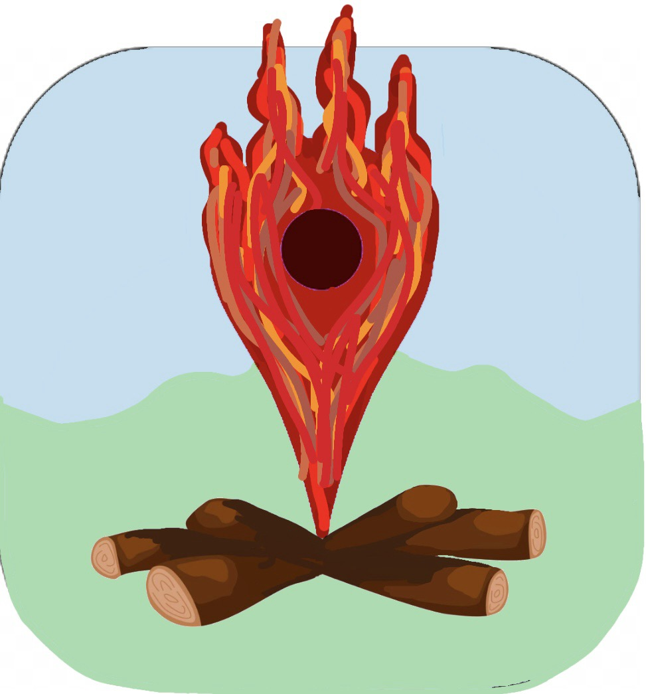

<mat-toolbar>
    
    <a routerLink="main/admin">Main</a>
    <a routerLink="main/campgrounds">Campgrounds</a>
    <span class="spacer"></span>
    <button mat-raised-button color="accent" *ngIf="!isLoggedIn" (click)="logIn()">Sign in</button>
    <button mat-raised-button color="accent" *ngIf="!isLoggedIn" (click)="register()">Register</button>
    <button mat-raised-button color="accent" *ngIf="isLoggedIn" (click)="logOut()">Log out</button>
</mat-toolbar>